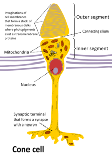
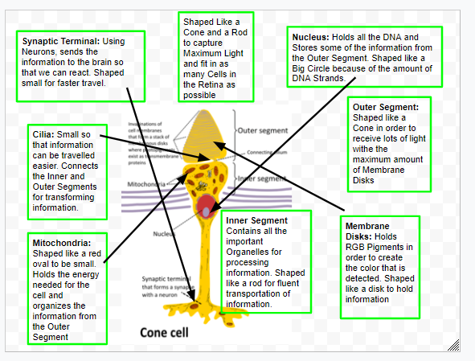
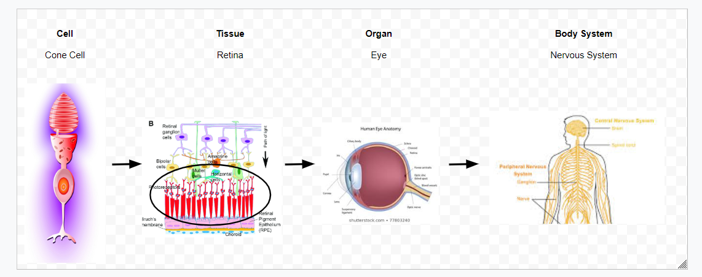
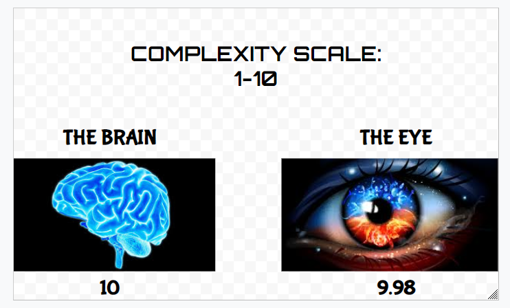

The Cone Cell is found in the eye and is used as color receptors which detects color and sends it to your brain.
They are also called photoreceptor cells because of their function to detect light and color.
The Cone Cell also works together with the Rod Cell, which detects light such as black and white, to send out viable information to the brain.
Structure & Function:
Shaped like a rod with a cone at the end in order to capture the maximum amount of light possible.
Made up of 2 Different Parts: Inner Segment and Outer Segment.
Outer Segment is pointed to the back and contains the Membrane Disks. These Membrane Disks are used to form a cone. Also the disks have Red, Green, and Blue pigments that detect color.
Also, a small wire shape called the Cilia connects the Inner and Outer segments.
Inner Segment holds all the important organelles.
Mitochondria is located in the Inner Segment which sorts out all the information given from the Membrane Discs in the Cone part.
The Nucleus stores all the information and gives it to the Synaptic Terminal.
The Synaptic Terminal then sends the information given by the Nucleus to the Neurons in the brain so the brain realizes the colors that are seen.
Arranged in a way so that the information from the Outer Segment can flow smoothly towards the Synaptic Terminal while other Organelles process the information.
All these different functions of the Organelles work together for the main function which is to sense color.


Protein Involved:
The protein that aids in the function of the Cone Cell is the Homeobox Protein.
This protein is found in the Retina or the light-sensitive tissue at the back of your eyes where the Cone Cell is.
It binds to the DNA in the Nucleus to control the activity in the genes.
Main function is the development of light detecting cells, Cone and Rod Cells, called photoreceptors.
Helps mature photoreceptor cells into either rod or cone cell and maintain these cells while preserving our vision.
Junction:
The Junction in between Cone Cells and Rod Cells are called Gap Juctions.
Gap Junctions allow for more molecular communication between the Cone and Rod Cells.
Smaller ions and molecules can pass through in a Gap Junction.
The main function of a Gap Junction in the retina is not known.
Hierarchical Order:
The first order is the Cone Cell to the Retina which is the tissue where a lot of cells are. Cell to Tissue relationship.
The second order is the Retina to the Eye which is one of the most important organs we have. Tissue to Organ relationship.
The last order is the Eye to the Nervous System or the Sensory System part which is responsible for all your 5 senses. Organ to Organ System relationship.

Fun Facts:
Your eyes focus on 50 different objects every second.
The only organ more complex than the eye is the brain.

Your eyes can distinguish approximately 10 million different colors.